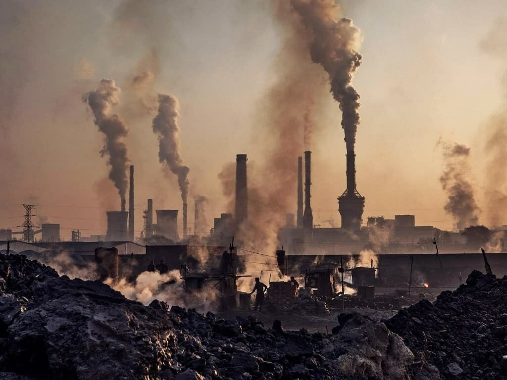

Best Visiting Places Of Pakistan

Abbottabad
i had visited in dec 2018
Abbottabad is a city located in the Khyber Pakhtunkhwa (KPK) province of Pakistan. It has a rich history that dates back several centuries. Here is a brief overview of the history of Abbottabad with key dates and important events: Pre-19th Century: The region where Abbottabad is situated has a long history of human habitation. Archaeological excavations have revealed evidence of ancient settlements in the area. The region came under the influence of various empires and kingdoms, including the Maurya Empire, the Kushan Empire, the Gupta Empire, and the Gandhara civilization. 19th Century: In 1853, Major James Abbott, a British officer, founded the town of Abbottabad. It was established as a garrison town during the British colonial rule in India. The town was named after Major Abbott. Abbottabad served as an important military cantonment and a strategic center during the British Raj. In 1901, the North-West Frontier Province (now Khyber Pakhtunkhwa) was created, and Abbottabad became one of its districts. 20th Century: During the partition of India in 1947, Abbottabad became a part of Pakistan. In 1955, Abbottabad District was established as a part of the West Pakistan province. The Pakistan Military Academy (PMA) was established in Abbottabad in 1947. It is the premier military training institution of Pakistan and has trained many officers who have served in the armed forces. In May 1998, Pakistan conducted its first nuclear tests, including one in the nearby Ras Koh Hills. Abbottabad played a significant role in the country's nuclear program. 21st Century: On May 2, 2011, Abbottabad gained worldwide attention when the United States conducted a covert operation in the city that resulted in the death of Osama bin Laden, the founder and leader of the terrorist organization al-Qaeda. In 2015, the district system in Pakistan was replaced by a new local government system, and Abbottabad became a city district. Abbottabad has seen significant urban development and population growth in recent years. It has become a popular tourist destination due to its scenic beauty and pleasant weather.
Thandiani
i had visited in feb 2019
Thandiani and Abbottabad are two popular tourist destinations located in the Khyber Pakhtunkhwa (KPK) province of Pakistan Thandiani is a picturesque hill station situated in the Gilyat region of KPK, approximately 31 kilometers northeast of Abbottabad. The word "Thandiani" translates to "very cold" in the local language, which reflects the cool climate of the area. Thandiani was discovered and developed by the British during the colonial era as a summer retreat due to its pleasant weather. The hill station served as a refuge from the scorching heat of the plains. It became a popular destination for British officers stationed in the region. Over the years, Thandiani has retained its charm and continues to attract tourists with its scenic beauty, lush green forests, and panoramic views of the surrounding mountains. It is known for its tranquil environment and is a popular spot for nature lovers and adventure enthusiasts.
Muree
i had visited in oct 2020
Murree is a popular hill station located in the Rawalpindi District of the Punjab province in Pakistan. Here's a brief history of Murree: Murree's history dates back to the British colonial period in the 19th century. The hill station was initially established as a sanatorium for British troops in 1851. It served as a cool and pleasant retreat during the scorching summers in the plains of Punjab. The town of Murree was named after the then Lieutenant Governor of Punjab, Sir William Wilson. It quickly gained popularity among the British officers and civilians, who flocked to the area to escape the heat of the plains. The British administration developed Murree as a summer resort, complete with Victorian-style buildings, churches, and other infrastructure. During the colonial era, Murree became a significant center for the British colonial government. It served as a headquarters for the Punjab government during the summer months. Numerous government offices, schools, and hospitals were established in Murree to cater to the needs of the British administration.
news about environment
-
LEGO plans to find replacement material for bricks by 2030
In an effort to be more environmentally responsible, LEGO have said they aim to stop manufacturing bricks made of plastic resin and are considering other options, which could include hemp. According to Telegraph World, the company makes 60 billion blocks a year. While LEGO want to replace the harmful plastic used in their products, they also require the new material to meet the high standards that allow the blocks to work as they always have, especially with the effective “clicking” together is a key aspect of the iconic coloured block.
-
Amazon deforestation and number of fires show summer of 2019 not a 'normal' year

The perceived scale of the Amazon blazes received global attention this summer. However, international concerns raised at the time were countered by the Brazilian Government, which claimed the fire situation in August was 'normal' and 'below the historical average'.An international team of scientists writing in the journal Global Change Biology say the number of active fires in August was actually three times higher than in 2018 and the highest number since 2010.
About me
-
Naima Muskan
Welcome to my corner of the web! I'm Naima Muskan, a passionate web developer and blogger with a love for all things digital. I'm thrilled to share my journey and expertise in the world of web development and blogging with you.